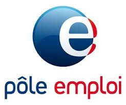
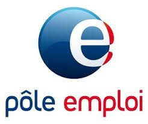

Régie de quartiers
Noailles-Belsunce
Régie de quartiers
Noailles-Belsunce
Une Régie de quartiers est une association qui regroupe des habitants, des collectivités locales et des bailleurs sociaux pour intervenir ensemble dans la gestion de leur territoire. À travers ses missions techniques, la Régie concourt à un projet global, ancré dans l’Économie sociale et solidaire, afin de contribuer à l’amélioration du cadre de vie et au vivre ensemble.
Les Régies de quartiers sont des structures labellisées par le Mouvement des Régies. Implantées sur l’ensemble du territoire national, la France compte 131 Régies de quartiers et Régies de territoires couvrant 320 quartiers prioritaires où vivent plus de 3 millions d’habitants.
Les Régies poursuivent une triple finalité :
En partenariat avec la Ville de Marseille et la Mairie du 1er secteur, la création d’une Régie de quartiers est en cours à Belsunce et Noailles, deux quartiers emblématiques de Marseille, pour répondre aux difficultés d’emploi, de mal logement, d’insécurité, d’insalubrité et à l’ensemble des problèmes que rencontre ce territoire.
La Régie de quartiers a à coeur de re-dynamiser ces deux territoires en proposant notamment comme remèdes une gestion urbaine partagée, un projet d’insertion à destination des habitants et des activités sociales venant répondre à leurs besoins.
Le siège de la Régie est situé au 39A, rue Nationale, 13001 Marseille.
| Adhérents | Assemblée générale constituée d'adhérents, acteurs locaux, institutions | ||
Conseil d'administration |
Collège Habitants Habitants et habitués des quartiers Noailles et Belsunce |
Collège Membres de droits (désignés ès qualité) Collectivités, institutions, bailleurs sociaux, structures d’insertion par le logement |
Collège Acteurs socio-économiques Associations du territoire et Régies de quartiers marseillaises |
Bureau |
Pierre ALBOUY Président |
Valérie CALVIAC Trésorière |
Karim BOUSSALEM Secréatire |

 



L’association accompagne deux catégories de bénéficiaires :
üè¢ 39 A rue Nationale 13001 Marseille